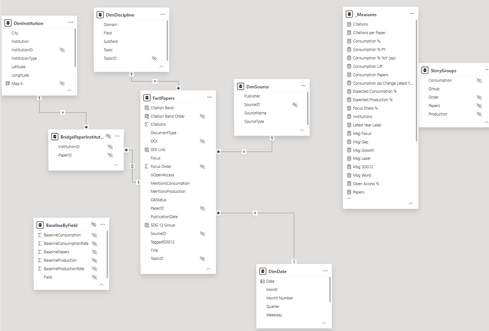
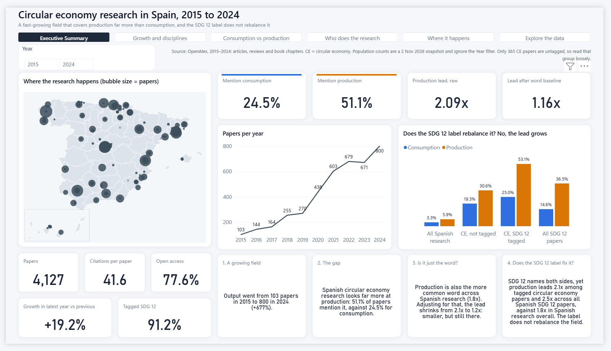
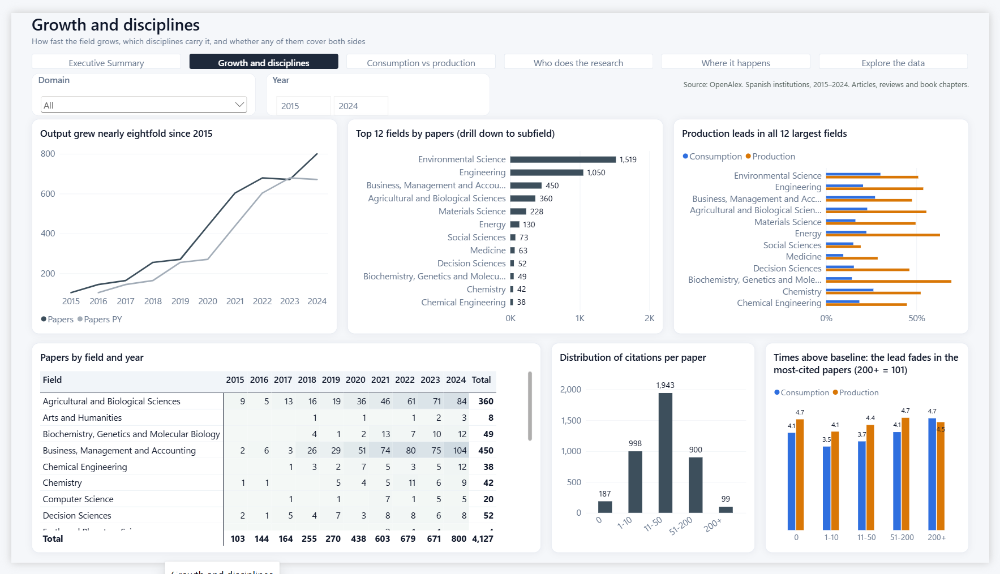
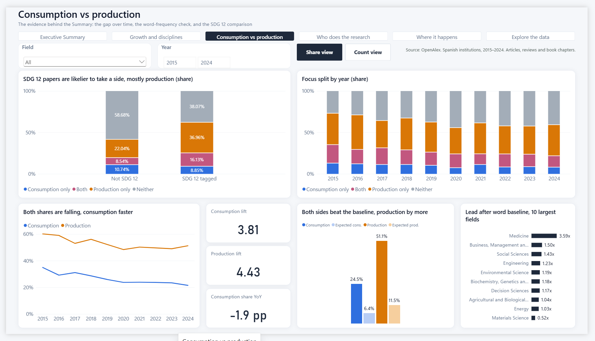
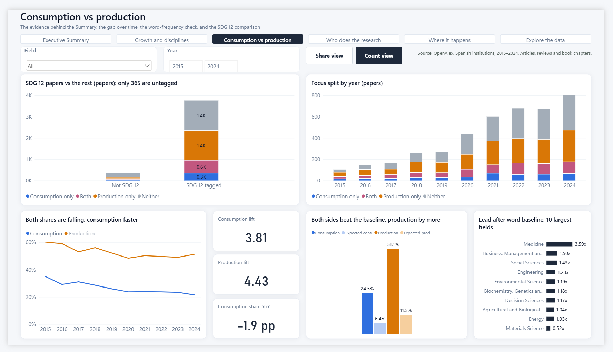
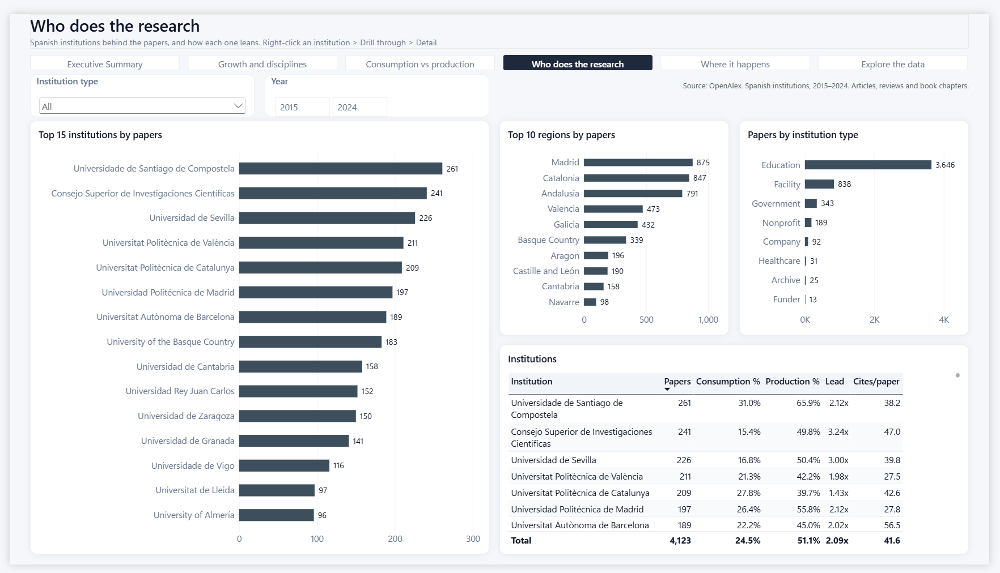
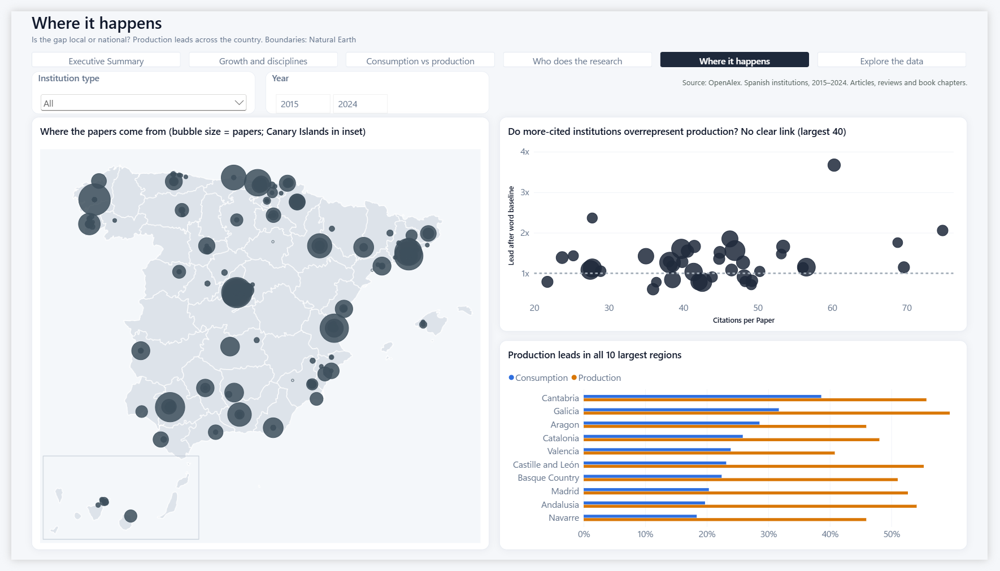
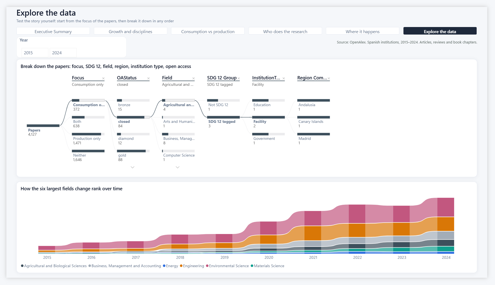
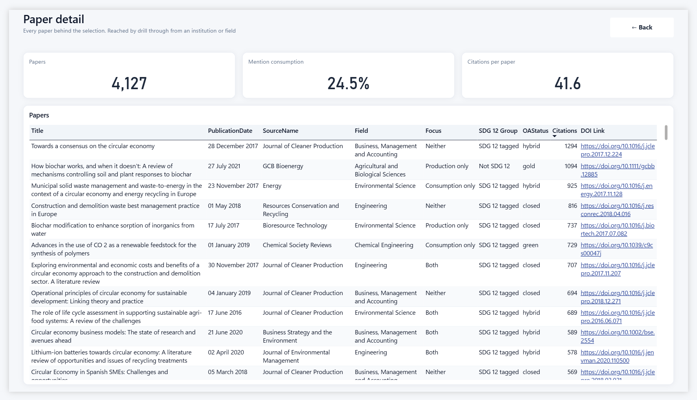

Circular economy research in Spain: consumption or production?
Circular economy (CE) research from Spanish institutions has grown nearly eightfold since 2015. The report asks which side of the economy that research looks at. Does it study consumption, or mostly production? And does research tagged with SDG 12, Responsible Consumption and Production, cover both sides?
1Source data
Source. OpenAlex is an open catalogue of scholarly works with a public REST API. Its data is licensed CC0, and the API returns JSON. I used three kinds of request:
works, the main dataset: papers with at least one Spanish institution, published 2015–2024, whose title or abstract mentions circular economy, industrial ecology, industrial symbiosis, life cycle assessment or material flow analysis. The fields used are ID, title, date, document type, citations, topic, journal, open access status, SDG tags and authorships with their institutions.works, filtered again: the same search combined with consumption terms (consumption, consumer, household, sufficiency, demand-side) and with production terms (production, manufacturing, producer, industrial process, supply chain). These return the IDs of papers that mention each side.institutions: the type, city, region and coordinates of each institution.- Group-by counts: the number of papers per field across all Spanish research, with and without the same terms. They give a baseline for how common each word is anyway.
Why this data. It answers a real research question with live, open data rather than a prepared file. It combines several sources and needs real cleaning: nested JSON, and papers with several institutions. It has a date on every row and enough dimensions (time, discipline, journal, institution and region) for a star schema. It contains several thousand rows.
Original data. The data comes from an API, so I can't attach it as a file. The source query is below. Refreshing the report needs a free OpenAlex API key. Power BI stores the key as a Web API credential, so it is never saved inside the .pbix.
https://api.openalex.org/works?filter=authorships.institutions.country_code:ES,publication_year:2015-2024,
title_and_abstract.search:("circular economy" OR "industrial ecology" OR "industrial symbiosis"
OR "life cycle assessment" OR "material flow analysis")
2Transformations in Power Query
- Custom function
fnOpenAlex: pages through the API with a cursor (List.Generate, 200 records per page) until no next cursor is returned. - Text queries, not loaded:
TopicSearch,BaseFilter,ConsumptionTermsandProductionTermsbuild the filters, so each search term is defined once. - Nested JSON: fields pulled out of records (topic → subfield → field → domain, journal, open access).
- Expanding lists: authorships → institutions, then filtering to Spanish institutions only. The result is the bridge table.
- Removing duplicates: papers by ID, paper–institution pairs, topics and journals.
- Merge queries: left joins of the papers with the consumption and production ID lists, which create two true/false flags. An inner join keeps only institutions that appear in the bridge.
- Conditional column
Focus: Consumption only, Production only, Both, Neither. AFocus Ordercolumn sorts it. - Replacing nulls: missing flags become false, missing journals Unknown and empty baseline counts 0.
- Filtering: rows without a publication date are removed.
- Baseline: three group-by results are merged by field, and the rates are added as custom columns.
- Data types are set as the last step of every query.
3Data model
| Table | Role | Content |
|---|---|---|
| FactPapers | Fact | One row per paper (4,127): date, citations, open access, SDG 12 tag, consumption and production flags, Focus |
| DimDate | Dimension | Calendar built in DAX (see below) |
| DimDiscipline | Dimension | Topic → Subfield → Field → Domain hierarchy |
| DimSource | Dimension | Journal or book series, publisher and type |
| DimInstitution | Dimension | 409 Spanish institutions: type, city, region and coordinates |
| BridgePaperInstitution | Bridge | One row per paper–institution pair (a paper often has several Spanish institutions) |
| BaselineByField | Support | Consumption and production word rates per field across all Spanish research. No relationship; read with LOOKUPVALUE |
| StoryGroups | Support | The four comparison groups in the SDG 12 chart. The whole-population rows are a snapshot from 2 Nov 2026 |
| _Measures | Measures | 34 measures in 6 display folders |
Relationships. Every dimension has a one-to-many relationship with the fact table and filters in a single direction. The exception is the bridge. The relationship from FactPapers to BridgePaperInstitution filters in both directions, so that choosing an institution filters its papers. Measures count rows of FactPapers, so a paper with three institutions is still counted once in the totals.
Calendar. DimDate is built with DAX: CALENDAR from 1 January of the first publication year to 31 December of the last one. It adds Year, Quarter, Month Number, Month, Year Month, Weekday Number and Weekday. Month and Weekday are sorted by their number columns. The table is related to FactPapers[PublicationDate] and marked as a date table, and Auto date/time is turned off.
Hidden fields. Keys (PaperID, TopicID, SourceID, InstitutionID), sort-order helpers, the raw DOI and the bridge and baseline tables are hidden from the Fields pane.

4DAX: calculated columns and measures
Calculated columns. FactPapers[SDG 12 Group] turns the tag into a readable label. [Citation Band] groups citations into 0, 1–10, 11–50, 51–200 and 200+, and [Citation Band Order] sorts the bands. [DOI Link] is set as a Web URL so the links are clickable. DimInstitution[Region Complete] fills the region that OpenAlex left blank for 212 of 409 institutions. I tested each institution's coordinates against Natural Earth regional boundaries, and the method reproduced all 197 regions that were already known. [Map X] and [Map Y] place each institution on the map image, with the Canary Islands moved into an inset.
| Folder | Main measures |
|---|---|
| Volume | Papers, Citations, Citations per Paper, Institutions, Open Access % |
| Consumption vs production | Consumption % and Production % (and their counts), SDG 12 %, Focus Share % |
| Time intelligence | Papers PY, Papers YoY %, Papers Cumulative, Consumption % PY, Consumption % YoY (pp) |
| Baseline comparison | Expected Consumption %, Expected Production %, Consumption Lift, Production Lift |
| Story | Production Lead, Production Lead Adjusted, Story Consumption % and Story Production % |
| Narrative | Msg Growth, Msg Gap, Msg Word, Msg Label: text measures for the key messages |
Time intelligence
These measures use the marked calendar. Papers PY drives the "Papers vs Papers PY" line, and Consumption % YoY gives the −1.9 pp card.
Papers PY = CALCULATE ( [Papers],
SAMEPERIODLASTYEAR ( DimDate[Date] ) )
Papers YoY % = DIVIDE ( [Papers] - [Papers PY],
[Papers PY] )
Baseline and lift
Expected Consumption % applies each field's rate across all Spanish research to the current selection's mix of fields. Lift is the actual share divided by the expected share. The adjusted lead is Production Lift ÷ Consumption Lift (4.43 ÷ 3.81 = 1.16x).
SUMX ( ByField, [@Papers] * [@Rate] ) / SUMX ( ByField, [@Papers] )
Narrative measures build the sentences on the Executive Summary from live values with FORMAT, so the key messages change with the slicers.
5Report pages
There are six pages in the navigation bar, plus a hidden Detail page reached by drillthrough. Every page has the same layout: a title, a subtitle that states the page's question, the navigation buttons, a row of slicers, a source note and the same theme. Blue always means consumption and orange always means production.

Executive Summary Summary
The headline KPIs, a map, papers per year, the SDG 12 comparison, and four numbered key messages built from narrative measures. It can be read in under a minute.

Growth and disciplines Analysis
Papers vs the previous year, the top 12 fields (you can drill down to subfield), consumption and production by field, a field × year matrix, citation bands, and the lift by citation band.

Consumption vs production Analysis
The core evidence: the Focus split for SDG 12 vs untagged papers and by year, both shares over time, lift cards, actual vs expected shares, and the adjusted lead by field.

… with Count view on Bookmark
The same page after clicking Count view. The two 100% charts become paper counts, which shows that only 365 papers are untagged.

Who does the research Analysis
The top 15 institutions, the top 10 regions, papers by institution type, and a table of each institution's consumption %, production %, lead and citations per paper.

Where it happens Analysis
A bubble map (a scatter chart over a static map image, since Azure Maps asks viewers to sign in), citations vs adjusted lead for the 40 largest institutions, and the two shares by region.

Explore the data Analysis
A decomposition tree (Focus, open access, field, SDG 12, institution type, region) where you choose the order of the breakdown, and a ribbon chart of how the six largest fields change rank.

Paper detail Detail
The most detailed level: one row per paper with date, journal, field, focus, SDG 12, open access, citations and a clickable DOI. A Back button returns to the page you came from.
Where to find filters, bookmarks and drillthrough
| Navigation | A button bar at the top of every page. Detail is hidden and opened only by drillthrough. |
| Visible filters | Year range slicer on every page, plus Domain (Growth), Field (Consumption vs production) and Institution type (Who, Where). |
| Hidden, report level | FactPapers[DocumentType] is article, review or book-chapter. This removes editorials, errata and other paratext. The filter is locked and hidden in the filter pane. |
| Hidden, page level | Who does the research and Where it happens: DimInstitution[Institution] is not blank. |
| Hidden, visual level | Top N filters: top 15 institutions and top 10 regions (Who); top 12 fields, two charts (Growth); top 10 fields, lead chart (Consumption vs production); 40 largest institutions in the scatter and top 10 regions (Where); 6 largest fields, ribbon chart (Explore). The type and region charts also exclude Other and blank values. |
| Bookmarks | Consumption vs production, buttons at the top: Share view and Count view. Each bookmark applies only to its target visuals and doesn't store data, so the slicer selections stay. Clicking swaps the two 100% stacked charts for count versions and highlights the active button. |
| Drillthrough | The Detail page has two drillthrough fields: DimInstitution[Institution] and DimDiscipline[Field]. Right-click an institution (Who does the research: bar chart or table) or a field (Growth and disciplines, Consumption vs production) and choose Drill through › Detail. The page subtitle says this. |
6Conclusions
What the data shows
- A fast-growing field: 103 papers in 2015 and 800 in 2024. In 2024 output was up 19.2% on the previous year. Environmental Science and Engineering lead.
- Production dominates: 51.1% of papers mention production and 24.5% mention consumption, a 2.09x lead. Part of this is the words themselves, because production is 1.8x more common across all Spanish research. After adjusting for each field, the lead falls to 1.16x. It is smaller, but it remains in 9 of the 10 largest fields. Materials Science is the exception.
- SDG 12 does not rebalance the field: tagged CE papers have a larger lead (2.12x) than untagged ones (1.60x), and across all Spanish SDG 12 papers the lead is 2.5x. 38% of tagged CE papers mention neither side.
- Both shares are falling, consumption faster: consumption fell from 35.0% to 21.4% between 2015 and 2024, and production from 60.2% to 51.1%. Production also leads in all 10 largest regions. Institutions with more citations per paper don't show a larger lead (Spearman ≈ 0.14).
- Caveats: this is an association, not a cause. Mentions come from a word search, so energy production also counts as production. Only 365 CE papers are untagged.
Difficulties
- API limits: the shared daily budget ran out partway through a refresh, so I needed a key. It is stored as a credential and not as a parameter, which keeps it out of the file.
- Several institutions per paper: I needed a bridge table and a two-way filter without double counting.
- The region was missing for half of the institutions. I filled it from coordinates and validated the method before trusting it.
- Azure Maps needs a sign-in, so I built the map as a scatter chart over an image.
What I learned
- Calling a paged API from Power Query with a custom function, and reshaping nested JSON.
- Modelling many-to-many relationships, and when a two-way filter is safe.
- How filter context works in
CALCULATE, time intelligence on a marked calendar, and using unrelated tables throughLOOKUPVALUE. - That a fair comparison needs a baseline. The raw 2x gap shrank to 1.16x once word frequency was accounted for.